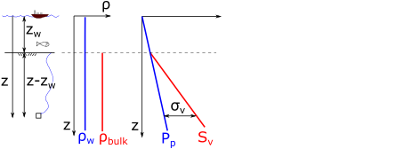

Next: Normal faults Up: Frictional strength of faults Previous: Frictional strength of faults Contents
At the large scale, the Earth's crust is constituted by “already broken" rock layers. These discontinuities are comprised mostly of faults. The cementation or cohesive strength of faults is negligible because the rock is already broken at those interfaces. Hence, a large block of rock does not have any cohesive strength or “unconfined compression strength”. Hence, its shear strength depends only on frictional strength according to the Coulomb frictional criterion (Fig. 5.10). You may think of “El Capitán” rock cliff (https://www.reviewjournal.com/wp-content/uploads/2018/06/10646363_web1_yosemite-fatal-fall_6053325.jpg) as an example of a rock mass, strong and continuous, but that is an exception not the rule. Furthermore, the size of “El Capitán” ( 900 m 3000 ft) is smaller than the size of sedimentary basins ( 100 km and bigger).
Because the lack of cohesive strength of the Earth's crust at the large scale, its shear strength just depends on frictional strength through the friction coefficient  (or equivalent friction parameter ). The coefficient  is the internal frictional angle of rock before rupture, while is the friction coefficient after initial rupture.
Hence, the shear strength of large blocks in the Earth's crust is simply
is the internal frictional angle of rock before rupture, while is the friction coefficient after initial rupture.
Hence, the shear strength of large blocks in the Earth's crust is simply
 |
(5.1) |
where
 |
(5.2) |
For typical friction coefficients the coefficient varies from 3 to 7. This means that the maximum ratio between maximum principal effective stress and minimum principal effective stress is
 3 to 7 (See Table 5.1). This ratio is usually called “(effective) stress anisotropy”.
3 to 7 (See Table 5.1). This ratio is usually called “(effective) stress anisotropy”.
The maximum allowable stress anisotropy in a geological formation depends on its shear strength. Faults form or reactivate when this stress anisotropy, and therefore shear strength, is surpassed.
 implies fault slip.
implies fault slip.
 implies no fault slip.
implies no fault slip.
![\includegraphics[scale=0.65]{.././Figures/split/6-20.pdf}](img508.svg)


{kind=link}